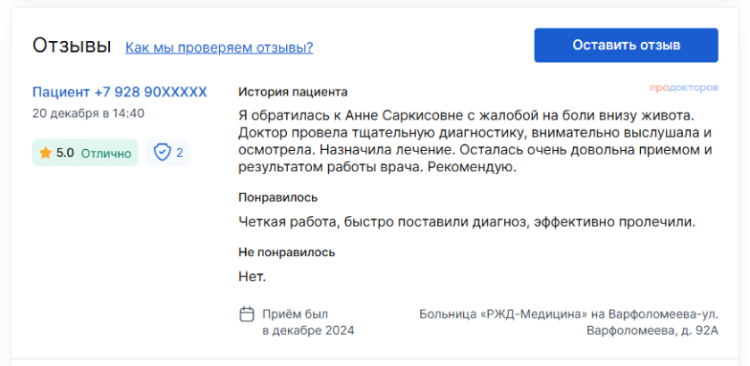

Наши специалисты
Петрова
Оксана Павловна
Общий стаж работы:
27 лет
Пациенты:
Любого возраста
Специализация
Образование высшее профессиональное.
Окончила Крымский медицинский институт им. С.И. Георгиевского в 1996 г. по специальности «Лечебное дело».
В 1998 году окончила интернатуру по специальности «Акушерство и гинекология».
- Повышение квалификации по дополнительной профессиональной программе «Гинекологическая эндокринология» 2024 г., ООО «Медицинская академия».
- Повышение квалификации по дополнительной профессиональной программе «Основы
- репродуктологии», 2024 г. ФГАОУВО «КФУ им. В.И. Вернадского».
- Периодическая аккредитация по специальности «Акушерство и гинекология» срок действия до 27.08.2029 г.
Окончила Харьковскую медицинскую академию постдипломного образования в 2008 г. по специальности «Ультразвуковая диагностика».
- Периодическая аккредитация по специальности «Ультразвуковая диагностика» срок действия до 27.08.2029 г.
- Профессиональную переподготовку по программе дополнительного профессионального образования по специальности «Эндоскопия» проходила на базе факультета повышения квалификации медицинских работников Медицинского института РУДН, 2017 г.
- Периодическая аккредитация по специальности «Эндоскопия» срок действия до 27.08.2029 г.
Член ассоциации акушеров-гинекологов Республики Крым. Член Петербургского союза врачей.
{kind=link}

Вопрос ответ
Выбор контрацепции зависит от возраста, состояния здоровья, регулярности менструаций и предпочтений. Для женщин доступны оральные контрацептивы, презервативы, внутриматочные устройства, имплантаты и другие методы. Важно обсудить с врачом, какой метод будет наиболее безопасным и эффективным для вас
Выбор контрацепции зависит от возраста, состояния здоровья, регулярности менструаций и предпочтений. Для женщин доступны оральные контрацептивы, презервативы, внутриматочные устройства, имплантаты и другие методы. Важно обсудить с врачом, какой метод будет наиболее безопасным и эффективным для вас
Выбор контрацепции зависит от возраста, состояния здоровья, регулярности менструаций и предпочтений. Для женщин доступны оральные контрацептивы, презервативы, внутриматочные устройства, имплантаты и другие методы. Важно обсудить с врачом, какой метод будет наиболее безопасным и эффективным для вас
Выбор контрацепции зависит от возраста, состояния здоровья, регулярности менструаций и предпочтений. Для женщин доступны оральные контрацептивы, презервативы, внутриматочные устройства, имплантаты и другие методы. Важно обсудить с врачом, какой метод будет наиболее безопасным и эффективным для вас
Выбор контрацепции зависит от возраста, состояния здоровья, регулярности менструаций и предпочтений. Для женщин доступны оральные контрацептивы, презервативы, внутриматочные устройства, имплантаты и другие методы. Важно обсудить с врачом, какой метод будет наиболее безопасным и эффективным для вас